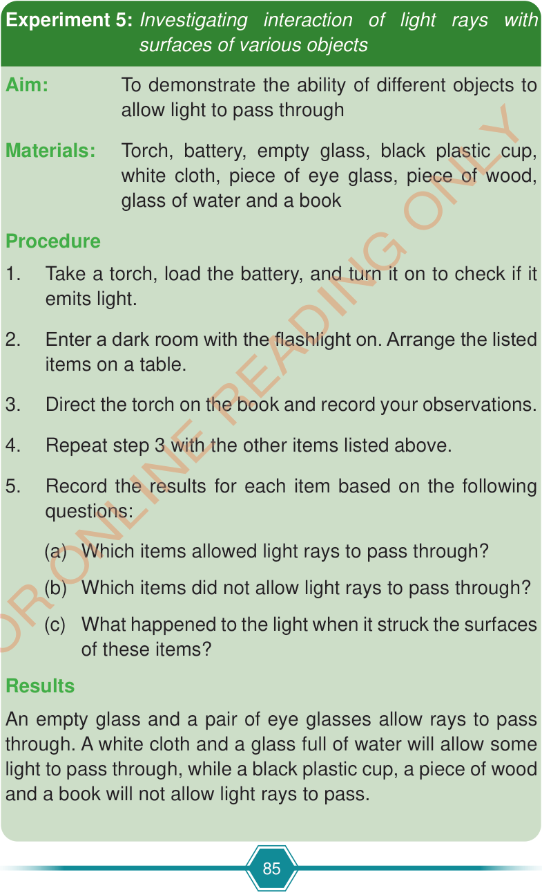

Experiment 5: Investigating interaction of light rays with surfaces of various objects
Aim:
To demonstrate the ability of different objects to allow light to pass through
Materials:
Torch, battery, empty glass, black plastic cup, white cloth, piece of eye glass, piece of wood, glass of water and a book
Procedure
Take a torch, load the battery, and turn it on to check if it emits light.
Enter a dark room with the flashlight on. Arrange the listed items on a table.
Direct the torch on the book and record your observations.
Repeat step 3 with the other items listed above.
Record the results for each item based on the following questions:
Which items allowed light rays to pass through?
Which items did not allow light rays to pass through?
What happened to the light when it struck the surfaces of these items?
Results
An empty glass and a pair of eye glasses allow rays to pass through. A white cloth and a glass full of water will allow some light to pass through, while a black plastic cup, a piece of wood and a book will not allow light rays to pass.